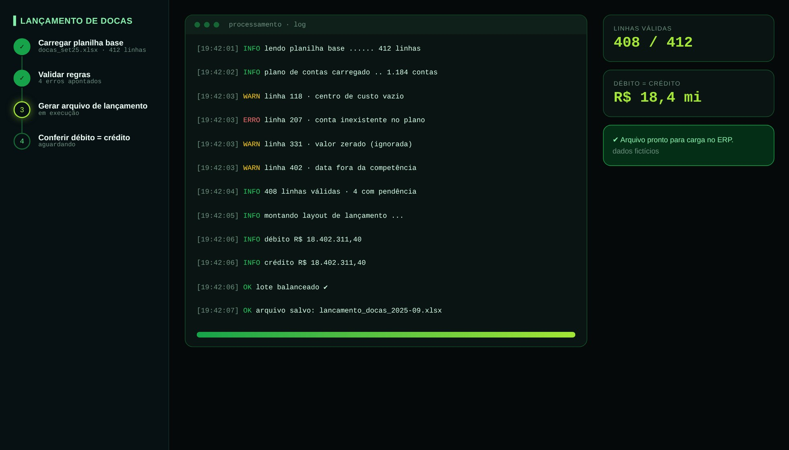

Tela de demonstração com dados fictícios
01
Lógica do negócio
Como funciona o processo
Alguns lançamentos recorrentes partem de uma planilha de apuração e precisam virar um arquivo de lançamento para o ERP. Todo lote precisa ter débito igual a crédito, contas e centros de custo válidos e competência correta.
O problemaMontar o lançamento manualmente aumentava o risco de erro de conta, centro de custo e lote desbalanceado.
Regras que governam o processo
- Débito = crédito em todo lote
- Conta e centro de custo precisam existir no plano de contas
- A data precisa estar dentro da competência
02
Como resolvi com dados
1
Leitura
Carrego a planilha base.
2
Validação
Aplico regras de conta, centro de custo, valor e competência.
3
Erros
Listo cada erro com a linha e a ação sugerida.
4
Geração
Monto o arquivo de lançamento no layout do ERP.
5
Conferência
Confirmo débito = crédito antes de entregar.
03
Tecnologias utilizadas
Fontes de dados
Planilha base (Excel)Plano de contas
Bancos e SQL
pandas
Processamento
Pythonpandasopenpyxl
Interface
Streamlit
Entrega
Arquivo de lançamento (.xlsx)
Automação
Launcher .bat
04
Funcionalidades
Validação por regra, linha a linha
Log com avisos e erros
Conferência automática de débito e crédito
Arquivo pronto para carga
05
IA aplicada neste projeto
Como usei IA
Cenários de lote desbalanceado, conta inexistente e data fora da competência.

Miguel Vinicius Moura Martins
Defini a regra de negócio, modelei os dados, validei os números contra o processo manual e desenvolvi a ferramenta com apoio de IA.
Lançamentos contábeisPlano de contasValidação de dadosPythonpandasStreamlit